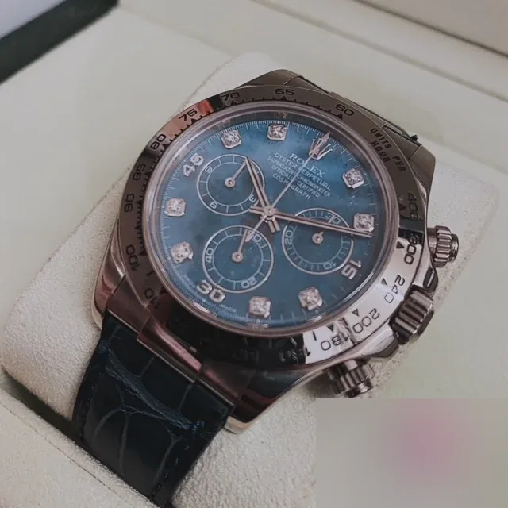

壊れたロレックスを売る前にやってはいけない3つのこと
壊れたロレックスを売る前に避けたいのは、自分で裏蓋を開けたり修理したりすること、外れた部品や付属品を捨てること、見積もりを取る前に修理や研磨を依頼することの3つです。止まっている・ガラスが割れているなどの状態でも買取の対象になるため、まずは現状のまま当店へご相談ください。
マガジン企画・編集・運営：〇〇〇〇（店舗の買取・質・販売は株式会社〇〇〇〇が運営）
壊れたロレックスでも売れる？
止まってしまった、ガラスが割れた、リューズが取れた、ブレスレットが切れたといった状態のロレックスも、買取の対象です。当社の〇〇〇〇A 心斎橋店は、壊れたロレックスの買取を得意としています。
ただし、売る前の行動によっては、評価の説明が難しくなることがあります。この記事では、壊れたロレックスを売る前に避けたい3つのことと、その理由を解説します。
| やってはいけないこと | 理由 | 代わりにすること |
|---|---|---|
| 1. 自分で開ける・直す | 内部の損傷が広がったり、開閉の跡が残ったりすることがある | そのままの状態でお持ちいただく |
| 2. 部品や付属品を捨てる | 修理の見込みや、本体の確認に使う情報が失われる | 外れた部品もすべて袋に入れて保管する |
| 3. 見積もり前に修理・研磨を頼む | 費用が査定額に上乗せされるとは限らない | 先に現状で査定を受けて比べる |
1. 自分で裏蓋を開けたり、直したりしない
時計が止まったとき、電池交換のつもりで裏蓋を開けようとする方がいます。ロレックスの多くは機械式時計のため、電池はありません。専用工具を使わずに裏蓋やリューズを触ると、ケースに傷がついたり、防水パッキンを傷めたりすることがあります。
また、インターネットで購入した部品を使って自分で交換したり、正規以外の修理店で純正以外の部品に交換したりすると、査定では純正の状態とは評価の考え方が変わります。止まった時計は、振ったりリューズを何度も回したりせず、そのままの状態でお持ちください。
水が入った場合は早めに相談を
ガラスの内側が曇っている、水滴が見えるといった場合は、内部に水分が入っている可能性があります。そのまま放置するとさびが進むことがあるため、ご自身で乾かそうとせず、早めに当店へご相談ください。
2. 外れた部品や付属品を捨てない
取れたリューズ、外れたコマ、割れたガラスの破片、切れたブレスレットの部品などは、捨てずに一緒にお持ちください。部品がそろっているかどうかで、修理の見込みや評価が変わることがあります。
壊れたからといって、箱や保証書（ギャランティカード）、余りコマを処分してしまうのも避けましょう。付属品は、壊れた時計でも型番やシリアルの確認、購入時期の説明に役立ちます。

3. 見積もりを取る前に修理や研磨を依頼しない
「直してから売ったほうが高くなる」と考えて、先に修理を依頼する方もいます。しかし、修理費用がそのまま査定額に上乗せされるとは限りません。修理費用が、修理によって上がる査定額の幅を上回ることもあります。
また、修理と一緒にケースやブレスレットの研磨（ポリッシュ）を依頼すると、小傷は目立たなくなりますが、金属を削るためケースの角の形が変わっていきます。まずは現状で当店の査定をお受けいただき、修理の見積もりと比べてからご判断ください。
| 状態 | 考え方 |
|---|---|
| 止まっている・遅れが大きい | 現状で当店の査定を受け、修理見積もりと比べてから判断する |
| ガラスが割れている | 破片でケースや文字盤を傷つけないよう、触らずにお持ちいただく |
| ブレスレットが切れた | 外れたコマやピンも一緒にお持ちいただく |
| 過去に修理した | 修理の明細書があればお持ちいただき、修理先と内容をお知らせいただく |
現状のまま当店へお持ちいただくための準備
- 時計を触らずに保管する柔らかい布で包み、ほかの物とぶつからないようにします。
- 部品と付属品を集める外れた部品、箱、保証書、余りコマ、修理明細をまとめます。
- 状態をメモするいつ・どのように壊れたか、過去の修理歴を書き出しておきます。
- 当店のLINE査定で相談する壊れた箇所がわかる写真をお送りいただくと、ご来店前に目安をお伝えできます。
ロレックスの査定ポイントの全体像はロレックス買取ガイドで、主要モデルの相場はデイトナ 126500LNやサブマリーナー 126610LNの相場ページで確認できます。時計のカスタムについては〇〇〇〇Bの「時計アフター加工」とは？もご覧ください。
壊れた時計の査定は当店へ（電話・LINEで無料相談）
どちらの店舗でも査定・ご相談を承ります。2店舗の違いと選び方
よくある質問
動かないロレックスでも保証書は必要ですか？
保証書がなくても査定の相談はできますが、お手元にある場合は一緒にお持ちください。型番やシリアル、購入時期の確認に役立ちます。
他店で修理したことがあるロレックスも売れますか？
査定の相談はできます。修理先や交換した部品がわかる場合はお知らせください。純正以外の部品が使われている場合は評価の考え方が変わります。
ロレックス以外の壊れた時計も相談できますか？
ほかのブランドの時計についても、査定のご相談を承れるか店舗へお問い合わせください（対応ブランドの詳細は【要確認】）。時計全般の査定ポイントは時計買取ガイドで解説しています。
出典・参考資料
- ロレックス 公式サイト（確認日：2026年9月28日）
- 〇〇〇〇A 公式サイト https://example.com/（確認日：2026年9月28日）
- e-Gov法令検索（古物営業法）（確認日：2026年9月28日）
壊れた時計の査定は当店へ（電話・LINEで無料相談）
どちらの店舗でも査定・ご相談を承ります。2店舗の違いと選び方